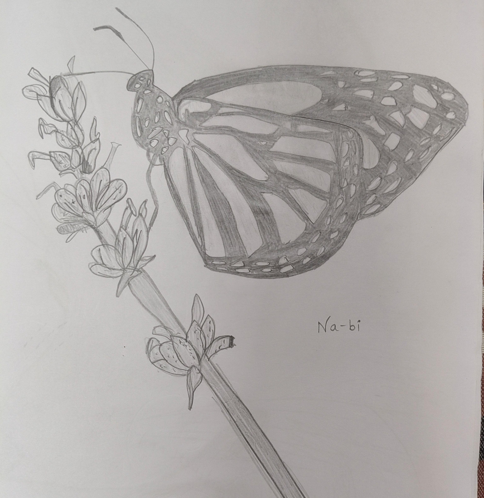
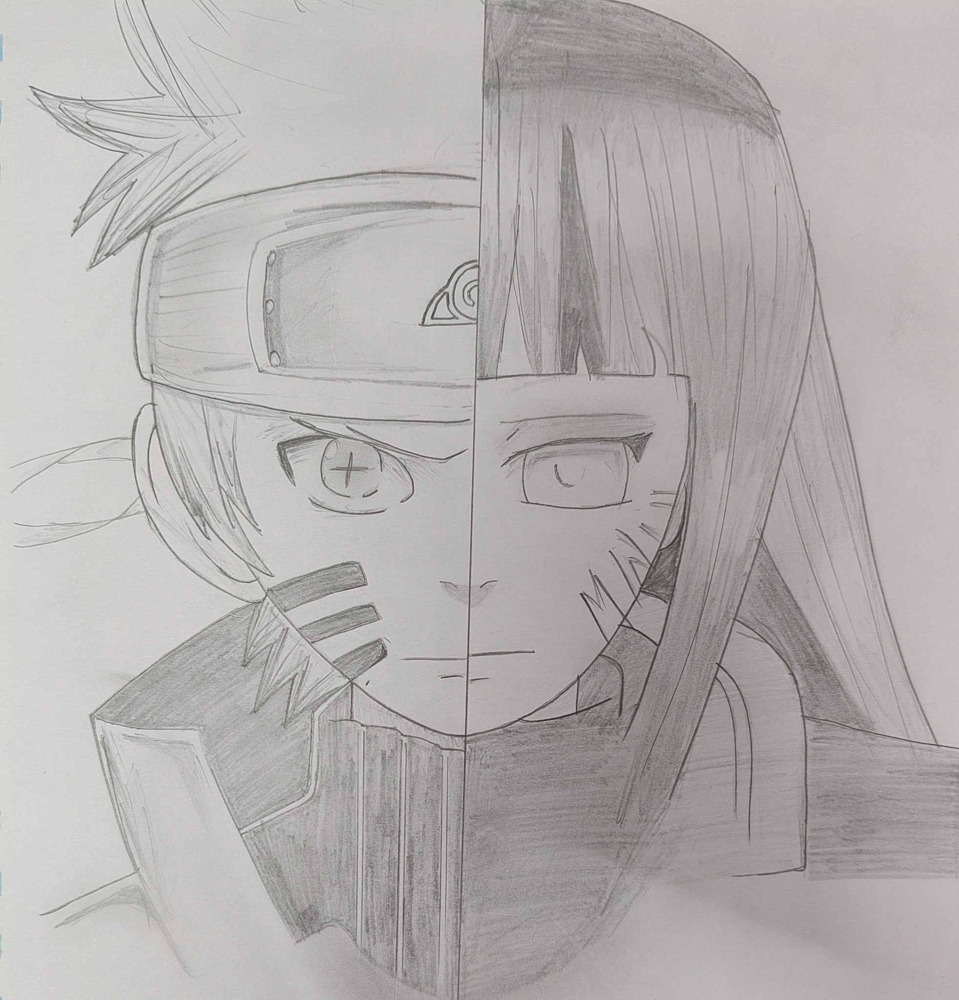
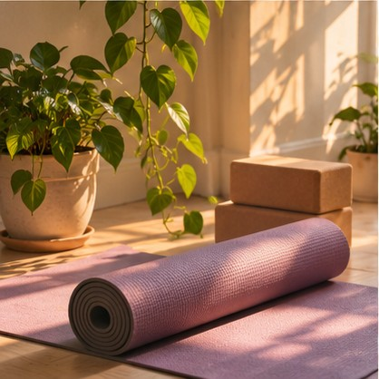
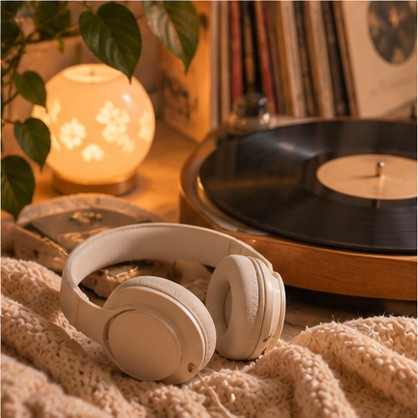
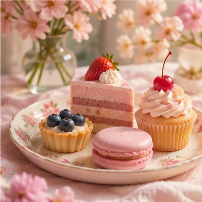

17 AUG 2026 — PRESENT
Graduate Trainee · PSIOG
Building technical knowledge through structured learning and practical exercises in C++, C#, SQL, Git and GitHub.
HELLO, I'M
Passionate about building meaningful technology and solving real-world problems.
I'm an IT graduate who enjoys learning new things and exploring different areas of technology. I'm interested in software development and enjoy improving my skills through projects and new challenges. Beyond technology, sketching is one of my favourite creative pursuits.
Based in Chennai, India

THE PATH SO FAR
A snapshot of my academic and professional path.
EDUCATION & EMPLOYMENT
17 AUG 2026 — PRESENT
Building technical knowledge through structured learning and practical exercises in C++, C#, SQL, Git and GitHub.
2022 — 2026
Completed an undergraduate degree in Information Technology with a CGPA of 8.26.
2021 — 2022
Completed Higher Secondary education with 90.33%.
2019 — 2020
Completed Secondary School education with 87.6%.
INTERNSHIP EXPERIENCE
MAY — JULY 2025
Worked individually on a Movie Recommendation System using Python and a Kaggle movie dataset. Explored data science concepts and Scikit-learn, focusing on movie similarity and recommendations.
CERTIFICATION & TRAINING
2026
Completed the Tech4All training programme in collaboration with ICT Academy and Cognizant Foundation.
ACTIVITIES & ACHIEVEMENTS
UXTopia, Infyra'24. Helped coordinate a 50-participant event.
Recognized for a paper presentation.
Volunteered for IEEE Day as part of the IEEE CIS Content Team.
TOOLS & TECHNOLOGIES
Java · Python · C · C++ · C# · JavaScript
HTML · CSS · React.js · Figma
SQL · MySQL · PostgreSQL · Git · GitHub
Skills listed reflect technologies learned or explored; proficiency varies by technology.
A LITTLE MORE ABOUT ME
Little interests that make everyday life more colourful.
Anirudh · Taylor Swift · Shreya Ghoshal
The Pursuit of Happyness · Interstellar
Veg biryani and chats.
Coorg is a favourite destination.
I love discovering and enjoying desserts.
MY SUPPORT SYSTEM
A little part of my world, and a big part of who I am.
MADE WITH PATIENCE & IMAGINATION
A space for the things I love creating and practising.
Sketching is one of my favourite ways to slow down, focus and express creativity.

LITTLE THINGS THAT MAKE ME, ME
A few simple joys that make ordinary days feel special.
Letters with a little personality.

Finding my balance.

Melodies I love.

Always room for something sweet.